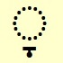
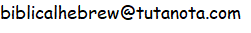

This website is about Biblical Hebrew, the language of most of the
Tanakh is the Jewish name for the Hebrew Bible. It is an acronym based on the traditional Jewish division of the Hebrew Bible into:
- Torah (Teaching: Genesis, Exodus, Leviticus, Numbers, Deuteronomy),
- Nevi’im (Prophets: Joshua, Judges, Samuel, Kings, Isaiah, Jeremiah, Ezekiel, and 12 minor prophets), and
- Ketuvim (Writings: Psalms, Proverbs, Job, Song of Songs, Ruth, Lamentations, Ecclesiastes, Esther, Daniel, Ezra, Nehemiah, Chronicles)
If you've decided to learn (or relearn!) Biblical Hebrew, this website is for you.
These pages cover only pronunciation, that is, sounding out words without necessarily understanding their meanings. Pronunciation is really important- the text of the Tanakh is meant to be spoken or chanted.
Nearly all the Hebrew words in these pages are from roots which occur at least 500 times in the Tanakh, so they are words you will encounter frequently when reading the Tanakh. Most of the time I have not provided translations since these pages are not intended to teach vocabulary, and trying to learn vocabulary out of context is unproductive. There is, however, a list of words with translations in Alefbet ＋.
Audio is a feature of this site. You can click on every Hebrew word to hear it pronounced.
The website pages are:
Alefbet
This page has the information you need to pronounce words in Biblical Hebrew correctly: the alefbet (consonants) and vowels; how to pronounce words by breaking them into syllables, and which syllable is stressed (emphasised).
There is also information about cantillation marks. It is really worthwhile making the extra effort to learn about these. Not only are they invaluable in assisting with pronunciation, but also later on in your Biblical Hebrew learning they will help you decipher the Hebrew text, as they contain information about punctuation.
Alefbet exercises
This page has lots of exercises to help you learn to pronounce words in Biblical Hebrew. Every Hebrew word in the exercises has audio so you can immediately check your pronunciation.
There are exercises relating to each of the main sections of Alefbet: you can practise consonants and vowels separately, and also select one or more consonants and vowels and practise pronouncing them when they are combined into consonant+vowel.
There are exercises for dividing words into syllables, for using the cantillation marks to find the stressed syllable, and to practise pronouncing words from the Tanakh. Each time you do these exercises, the exercise consists of a selection of words from a pool of around 300 frequently occurring words, so the exercises are different each time you do them.
And lastly, there are exercises to help you learn the names of people and places in the Tanakh.
Alefbet ＋
This page contains extra information, deeper dives and background about Biblical Hebrew pronunciation. I have concentrated on things that puzzled me when I started learning. (The pronunciation of the vowel alefbet_consonants_and_vowels/a_or_o still puzzles me...) If you're just beginning your Biblical Hebrew journey you should probably skip this page!
Resources
This page has the text of the blessing before Torah study, and a few links to free internet resources related to pronunciation.
Learning to read the Hebrew alefbet is definitely challenging. Try to do a bit every day, even if only for a short time, rather than longer infrequent bursts. If you're a complete beginner you may like to start by choosing one or two letters which appeal to you and learning those first. My favourites are לalefbet_consonants_and_vowels/l and שׁalefbet_consonants_and_vowels/sh - for a long time these were the only 2 letters I could recognize in the prayerbook. In alefbet exercises there is an exercise where you can choose one or more consonants and vowels and practise the sounds. Many people find it helpful to have a study buddy (a "chaver" in the Jewish tradition).
Let me know if you find these pages useful, and/or if you have comments or suggestions or find errors.
Susan Donath

Tevet 5784 / December 2023